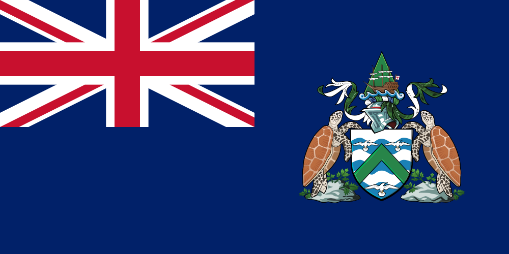
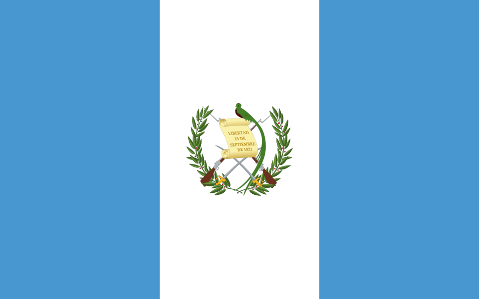
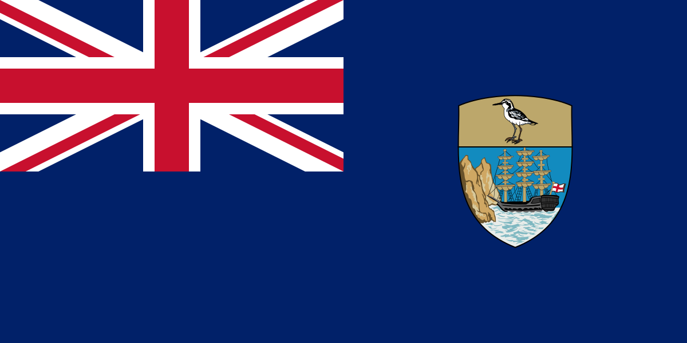
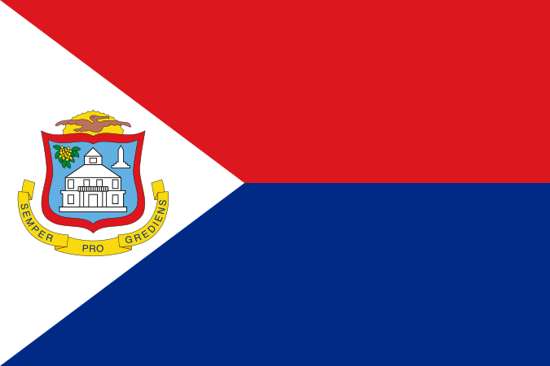
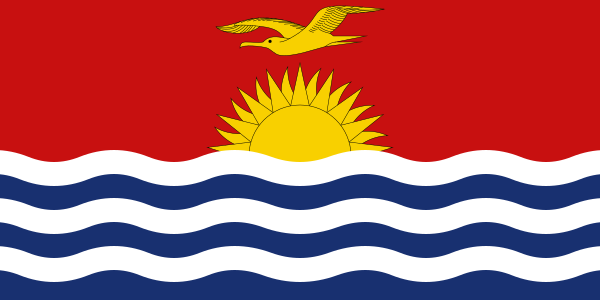

- Flag of Plurinational State of Bolivia
Condor.svg)
- Flag of Ascension Island

Sea gulls (yes, there are atleast three of them, squint your eyes really hard and see) - Flag of Dominica
Purple Sisserou Parrot/Imperial amazon/Dominican amazon ()
- Flag of Ecuador
Condor
- Flag of Fiji
Dove (of Peace)
- Flag of Guatemala

Resplendent quetzal - Flag of Papua New Guinea
Raggiana bird-of-paradise
- Flag of Saint Helena

Saint Helena plover (what an adorable little birdie) - Flag of Sint Maarten

Pelican (yeah, no specific pelican. Just another pelican. Not even pelican of peace or something.) - Flag of Uganda
Grey crowned crane
- Flag of Kiribati

Frigatebird - Flag of Christmas Island
White-tailed tropicbird
Okay so this flag of the Christmas Island and the flag above of Kiribati comes with my own bird theory. The flag of Christmas Island features Golden bosun subspecies of the White-tailed tropicbird found in the tropical Atlantic, western Pacific and Indian Oceans. The Flag of Kiribati above features Frigatebird which has a subsepcies called Christmas frigatebird which is tagged as vulnerable and only breeds on the Christmas Island, as opposed to the White-tailed tropicbird which is least concerned and breeds at muliple places. If the Christmas Island people wanted so desparately to put a bird on their flag, then why did they not choose Chistmas frigatebird to be that bird like aaaaaa it just doesn't make sense to me?! - And now a scam bird flag because that bird's not even real!
Flag of Zimbabwe
Zimbabwe Bird (yes you guessed it right, it looks extremely funny, especially for a national emblem of a real country)